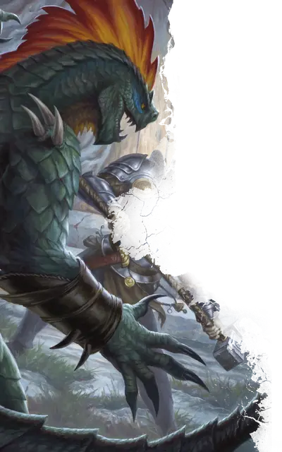

Превращённый людоящер
Lizardfolk Render
Большой Гуманоид (Людоящер), нейтральный

Класс Доспеха 15 (природный доспех)
Хиты 52 (7к10 + 14)
Скорость 30 футов, плавая 30 футов
| мод | спас | ||
|---|---|---|---|
| СИЛ | 16 | +3 | +3 |
| ЛОВ | 10 | +0 | +0 |
| ТЕЛ | 14 | +2 | +2 |
| мод | спас | ||
|---|---|---|---|
| ИНТ | 7 | −2 | −2 |
| МДР | 12 | +1 | +1 |
| ХАР | 7 | −2 | −2 |
Навыки Атлетика +5, Восприятие +3, Выживание +5
Чувства пассивное Восприятие 13
Языки Драконий
Опасность 3 (700 опыта)
Бонус мастерства +2
Особенности
Задержка дыхания. Людоящер может задержать дыхание на 15 минут.
Кровавое бешенство. Людоящер совершает с преимуществом броски рукопашных атак по существам, у которых хиты ниже максимума.
Действия
Мультиатака. Людоящер совершает две атаки: одну Когтями и одну Укусом.
Когти. Рукопашная атака оружием: +5 к попаданию, досягаемость 10 футов, одна цель. Попадание: 12 (2к8 + 3) рубящего урона.
Укус. Рукопашная атака оружием: +5 к попаданию, досягаемость 5 футов, одна цель. Попадание: 8 (1к10 + 3) колющего урона.
Поле разрыва (Перезарядка 5-6). Людоящер совершает атаку когтями по каждому существу по своему выбору, находящимся в пределах 10 футов. Существо, пораженное этой атакой, должно преуспеть в спасброске Силы Сл 13, иначе упадёт ничком.
Описание
Наполненный первичной магией Семуании, людоящер претерпевает ужасающие изменения во время дневного ритуала, проводимого шаманом. Как видно из "Опасности в Дануотере", когти превращённого людоящера становятся длинными и твердыми, как сталь, его тело увеличивается, а темперамент становится еще более свирепым.